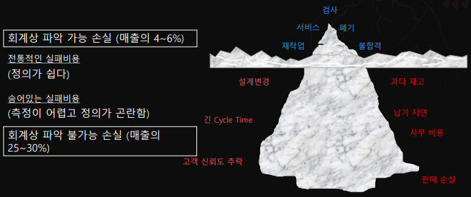
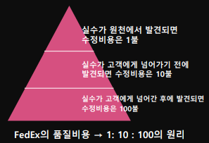
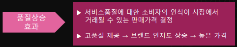
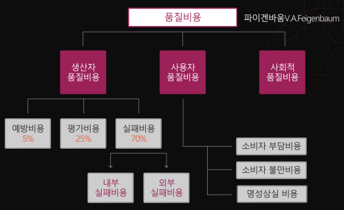
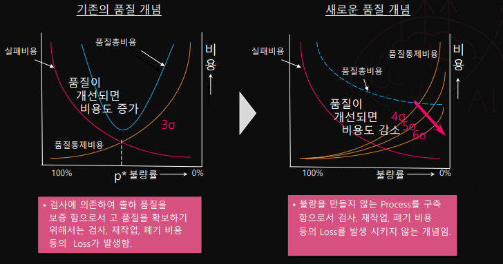

해당 글은 LG에서 지원하는 LG Aimers의 교육 내용을 정리한 것으로,
모든 출처는 https://www.lgaimers.ai/입니다.
품질이란?
품질의 개념
전통적 품질: 규격에 부합하는 것
품질을 보는 5가지 관점
- 선험적: 품질을 정의할 수는 없더라도 무엇인지 고객이 인지, 선천적 우수성
- 제품: 바람직한 성분이나 속성의 함량 ex) 인상 - 사포닌의 함량, 겨울 내의 - 섬유의 짜임새가 촘촘
- 사용자: 용도 적합성
- 제조: 요구사항에 부항되는 정도
- 가치: 실제 용도와 판매 가격의 최적 상태
품질의 구성 요소
제품 특징: 시장 점유율의 확대, 가격 등 '판매 수익의 증대'에 기여하는 요소, 원가 상승 수반
무결함: 재작업, 폐기처분 감소 등을 통한 '원가 절감', 적합 품질이라 볼 수 있음
품질의 유형
요구 품질: 고객이 요구하는 품질, 정량적으로 측정하고 규정할 수 없는 추상적 개념
설계 품질: 장비, 시설, 인력 등을 고려하여 구체적으로 명문화한 품질, 기술 수단과 비용을 고려
제조 품질 또는 적합 품질: 원자재 품질, 설비 능력, 기술 수준, 작업자 숙련도 등 불확실 요소, 설계 품질과 비교해 판단
사용 품질 또는 시장 품질: 고객이 실제로 사용한 후 느끼는 만족감 또는 불만
품질의 차원
성능: 제품의 기본적 운용 특성
특징: 성능의 부차적 보완적 특성
신뢰성: 사용 환경에서 규정된 기간 동안 작동될 성능
적합성: 표준이나 규격에 부합되는 정도
내구성: 제품의 사용 수명
서비스성: 수리 용이성과 신속성, 친절도
심미성: 제품의 외관
인지품질: 광고, 브랜드 등에 의해 형성된 지각 품질
품질의 중요성
기업의 품질 우위는 경쟁력의 필수 요건, 시장 확보 및 수익성 제고를 위한 기본 요건이며 전략 변수
ISO 9000 시리즈의 품질
정의: 제품 또는 서비스가 명시 또는 묵시된 요구를 충족시킬 수 있는 능력으로서 가지고 있는 특징 또는 특성의 전체
시사점: 기업 경영 철학과 사회, 기업 간 신뢰 확보의 수단으로 인식
종합적 품질
제품과 서비스가 아무리 훌륭하더라도 고객에게 수용되지 않으면 의미 없음, 고객 지향적 품질의 정의 중요
제품 및 서비스의 품질 Q, 비용 C, 납기 D, QCD도 종합적 품질에 포함
투입 자원과 생산 과정, 최종 제품의 모든 QCD를 포함하여 '과의의 기업의 질'이라고 함
품질비용
저품질비용 COPQ: Cost of Poor Quality
기업의 이익에 기여하지 않는 모든 것
품질 비용 Q-Cost + Hidden Cost
Hidden Cost

품질로 인한 상승 효과


품질비용의 종류

예방비용: 처음부터 불량이 발생하지 않도록 하는 데 소요되는 비용
평가비용: 품질 수준을 유지하는 데 드는 비용
실패비용: 품질 수준을 유지하는 데 실패하여 발생되는 비용
- 내부실패비용: 폐기, 재작업, 외주 불량, 재검사, 등급 저하, 안전 사고
- 외부실패비용: 반품, 환불, 무상수리, 리콜, AS
품질비용의 새로운 개념

품질이 좋아지면 비용이 줄어든다